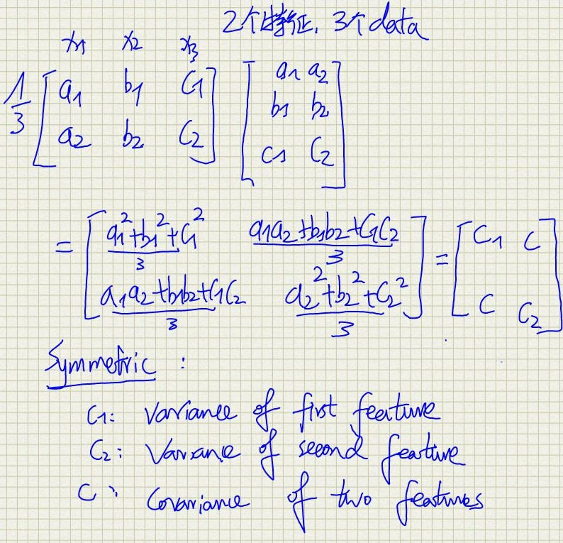
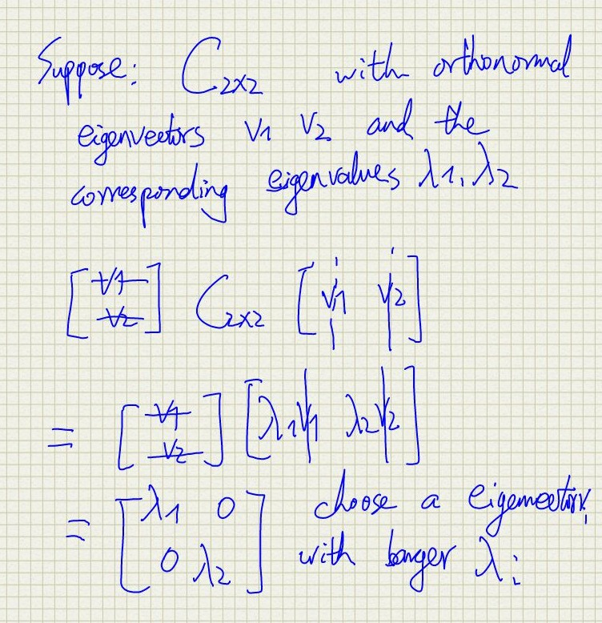

— layout: post title: "Notes of PCA (Principle Component Analysis)— Go Through Some Main Ideas of Linear Algebra" permalink: :title tagxs: [Foundamentals of Machine Learning] — <head> <meta http-equiv="Content-Type" content="text/html;charset=utf-8"> </head> #+ENDHTML
The application of linear algebra in engineering is very extensive and in-depth, and Linear Algebra provides a beautiful mathematical interpretation of the real world. You may use it in different engineering fields, e.g. spatial coordinate transformation, wavelet analysis, Fourier transform, image processing, parameter identification, etc., all of which require you to have a solid knowledge of linear algebra. There are also many classic online open courses and resources. Actually, you will find that linear algebra is thoroughly interesting! This post will use PCA as an example to quickly browse through some important basic ideas of linear algebra. In the last semester, linear algebra was used in many courses, I'd better sort it out.
If you are or have ever been a student from engineering, you must be very familiar with Fourier transformation that can transform a continuous periodic time domain signal to a discrete aperiodic frequency domain signal. Generally, in the time domain, the signal doesn't give us clear enough information, but in the frequency domain, we can find which frequencies own the relative higher amplitudes and then rank them. PCA is just like this (but not the same, PCA does lossy compression), it tries to find the principle components of the given data. that usually requires a new interpretation of the original data.
In order to save memory, it is usually necessary to reduce the dimension of the data, as shown in the two-dimensional space of the following figure. If they are required to compress in one dimension space, that is, a line, how to select this line to make the error of reconstruction smallest? Obviously, u1 wins. The main task of PCA is like the following:
Suppose we have n data (x1, x2,…, xn) in the Rd space, and the design matrix X in Rnxd. We want to do some lossy comression to decrease the dimension to d', meanwhile we hope not to damage the represental accuracy of the original data (i.e. the variance of the transformed data should be maximal). Thus, we should find a linear transformation L in Rd'xdto project the origin data to a best hyperplane. The data after transformation is represented as
\begin{equation} y_i =L x_i \end{equation}where yi in Rd'. Let Y in Rnxd'be the design matrix of the output of transformation. The row of Y is transpose of y vector, so we have:
\begin{equation} Y = X L^T \end{equation}Two principles:
Let's first look at the example in the following figure. Suppose we have 2 features and 3 data. 
The covariance matrix of X is represented as:
The covariance matrix of Y is denoted as:
\begin{equation} C_y=\frac{1}{n} Y^T Y = \frac{1}{n} L X^X L^T = L C_x L^T = M^T c_x M \end{equation}So, we should find out the M so that covariance of the features equal 0, and the variance of the features are maximal. which also means that cy is optimized to be diagonal. If cy is positive definit, it turns out that the best M has eigenvectors of cy as its columns. We know that if cy is positive definit, we can always find out the eigenvectors of cy which is orthognal or orthonormal. So the final linear transformation for lossy compression is matrix with the d' eigenvector as rows, which correspond to the d' largest eigenvalues. AN example is shown in the following figure.

This is easy to understand, suppose we have 3 times 3 matrix A, we can regard the determinant of A as and the volume with three eigenvalues representing the length of 3 edges. So the larger the eigenvalue is, the more the Matrix 'A' is *"stretched"* in that direction.
Besides, the problem is equal to do SDV of matrix X. the sigular value is just the eigenvalue of XT X.